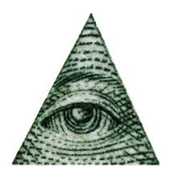
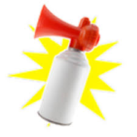
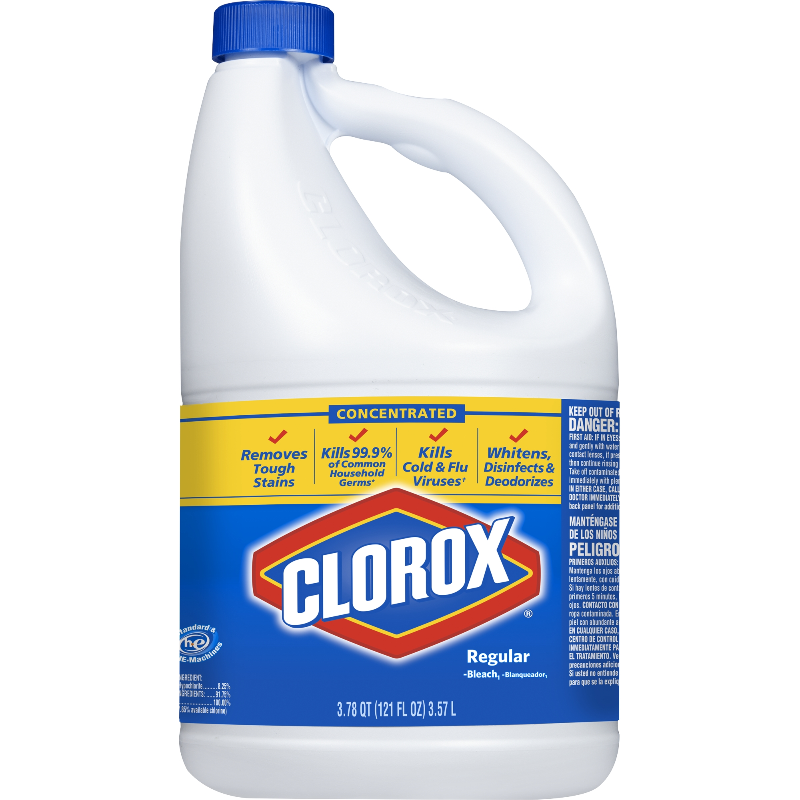
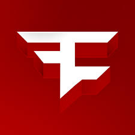
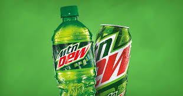

The Almighty Loaf is a talking loaf from a show back in the 1900's. He is amazing. $800 For A Loaf Of Him
Pepe is an important meme in meme history. Pepe is a green frog with some human features. He is also considered a dank meme. $3250 Dollars to Adopt
Dat Boi is a bright green forog who is riding on a unicycle. He is considered a dank meme and relates to Pepe the frog. $3300 Dollars To Hang Out With
Spooderman is a danker version of Spiderman. He has a drawn appearance and is very popular. $4000 To Save The Day
Harambe is a now decesed gorrila that was shot at Cinncinati Zoo. It is forever in our hearts, and to ressurect for enternity is an impossible feat. $6000 To Ressurect Temoparily
Grumpy Cat: A grumpy cat. Go away now. $1000 To Adopt
Dank Elf Man is a Dank Elf. He is a man. $2750 To Talk To
The Almigty Loaf
The Almighty Loaf is a talking loaf from a show back in the 1900's. He is amazing. $800 For A Loaf Of Him
Doge

Doge is a fluffy yellow dog. It likes to speak in Doge Language, some Doge Language is, "Much Wow and Such Dubstep" $2000 Dollars To Adopt
Pepe The Frog
Pepe is an important meme in meme history. Pepe is a green frog with some human features. He is also considered a dank meme. $3250 Dollars to Adopt
Dat Boi
Dat Boi is a bright green forog who is riding on a unicycle. He is considered a dank meme and relates to Pepe the frog. $3300 Dollars To Hang Out With

Spooderman
Spooderman is a danker version of Spiderman. He has a drawn appearance and is very popular. $4000 To Save The Day
Lenny Face
( ͡° ͜ʖ ͡°)( ͡° ͜ʖ ͡°) $20 To Be Typed

Harambe
Harambe is a now decesed gorrila that was shot at Cinncinati Zoo. It is forever in our hearts, and to ressurect for enternity is an impossible feat. $6000 To Ressurect Temoparily

Grumpy Cat
Grumpy Cat: A grumpy cat. Go away now. $1000 To Adopt
Dank Elf Man
Dank Elf Man is a Dank Elf. He is a man. $2750 To Talk To

Illuminati
A group who is obseesed with triangles and the color green. Wants to make a new world. $1250 To See.
ITEMS

Airhorn
An airhorn is a loud, portable, sound maker that lets of an ear ringing BAAAAAAA!!! We sell the most original airhorn in all of the world's history. $100 To Buy

Bleach
Bleach, people clean with it, people buy it from stores, but people also drink it to reach the maximum dankness. $100 To Buy

Faze Hats
From the youtube and gaming clan Faze, we have original hats from the most dank factories. $75 To Buy
MLG Sunglasses
MLG Sunglasses are MLG Sunglasses that you can wear. Makes you dank. $200 To Buy

Mountain Dew
Mountain Dew is the most MLG and dankest soda ever. $30 To Buy

Dorritos
Dorritos are good with Mountain Dew. Very Dank. $30 To Buy
windows xp
Windows XP is the worst computer software ever. $1 To Buy